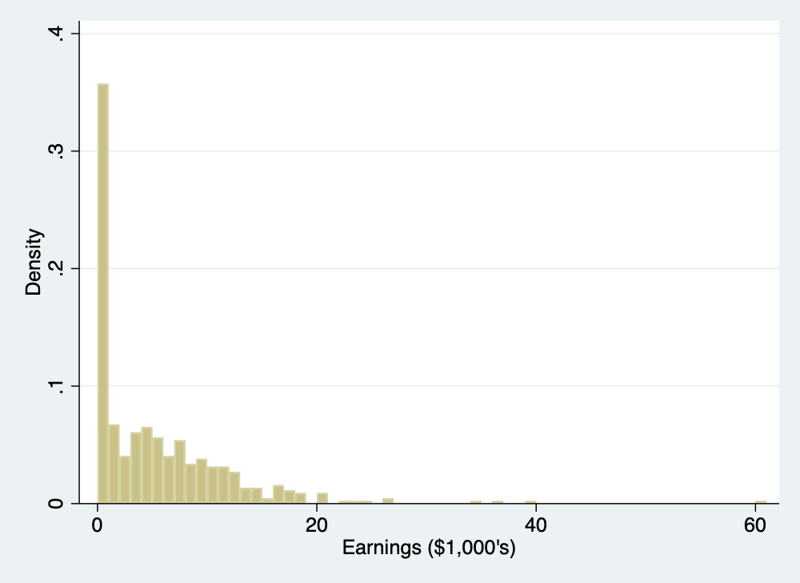

Lecture 1: Introduction to Stata
Jack Blundell (Stanford)
PUBLPOL 330D Applied Econometrics for Public Policy, Winter 2019
1. Introduction
In this class we will learn the basics of Stata. We will first go through some preliminaries, then launch into a simple worked example demonstrating how to:
- Load data into Stata
- Perform basic data-cleaning commands
- Generate plots
- Test for a difference in means between groups
- Save your output in a convenient format
2. Getting started with Stata
Stata is a statistical package which is:
Highly optimized for common econometric methods, both in syntax and computation
Easy to use
Well-supported by an active user base
Commonly installed in secure data labs
Stata is not:
As flexible as R and Python (Good luck applying machine learning in Stata!…)
As widely used in the private sector as it is in academia and think tanks
While R and Python are also valuable to learn, Stata remains the most-common programming language in empirical economics and is an excellent tool for learning and applying econometric methods. The majority of papers in applied economics include analysis using Stata and the majority of applied economists are comfortable using it.
2.1 The Stata Interface
The Stata Interface consists of the following windows:

Stata Interface (source: https://tutorials.iq.harvard.edu/Stata/StataIntro/StataIntro.html)
The roles of each element are:
The command window is where you can type in commands instructing Stata to perform calculations
The results window shows the output from any commands you run
The review window gives previous commands. This lets you keep track of what you’ve asked Stata to do.
The variables window gives information about variables. Note that each variable has a name and a label, along with some other properties
The graph window contains any graphical output
The do-file editor allows you to edit .do files, which is what Stata scripts are called. .do files contain commands which can then be run in batches.
2.2 Running code in Stata
There are two ways to run code in stata:
Typing directly into the command window then pressing enter
Writing then running a .do file
While the first option is easy for one-off commands, as you become familiar with the software it is best to use .do files. .do files are opened in the do-file editor, which can be opened through File -> New. They are run either by clicking ‘do’ or by pressing CMD+SHIFT+d (OSX) or CTRL+d (Windows).
2.3 Finding help
Perhaps the most important Stata command to know is help, which brings up Stata documentation. For example, typing help regress into the command window then hitting enter will bring up all documentation on the regress command in stata:
Stata help
See the end of these notes for further resources.
3. Worked example: Lalonde (1986)
3.1 Building a .do file
Our application will be a classic paper in Labor economics (LaLonde, Robert J. “Evaluating the Econometric Evaluations of Training Programs with Experimental Data.” The American Economic Review, 1986). In this paper, LaLonde investigates the impact of a randomized employment program on earnings. The data is provided in lalonde_experimental.txt.
We can now start looking at an example .do file. A typical project consists of several (often several dozen) .do files each with hundreds of lines of code which are interlinked, but here we will just work from a single file.
A .do file should start with a title and short description. My .do file for example starts with the following:
. /* Lecture 1 > PUBLPOL 330D Winter 2020 > Jack Blundell > */
. /* > Worked example of analysis of lalonde 1986 data. > Structure: > 0. Setup > 1. Import raw data > 2. Clean data > 3. Explore data > 4. Test for differences in means by group > */
The /* and */ symbols tell Stata that the enclosed text is not to be read as Stata commands, but instead provides information and context to the researcher reading the code. It is good practice when writing code to include some non-command text. These might be section titles, or small annotations describing code. Any text following * or //, or enclosed between /* and */ will not be read as a command by stata so can be used to convey this information.
Here’s an example of a comment, followed by a line of code:
// regress earnings on treatment for adult sub-sample
reg y t if age >= 18While your code might seem self-explanatory to you at first, oftentimes this is not the case for others, a grader or indeed for your future self. To avoid clutter, I exclude all comments in the code included below, but you’ll see them in the full .do file.
Next up in my .do file is the following:
. clear
. set more off
These two commands (clear and set more off) are standard to include at the top of .do files. They clear the system and allow Stata to print large amounts of output to the screen.
Next I set the working directory. For this example, we will work in a single folder which will be our directory, though more complex projects will require further structure. This should be where your .do file is saved, and where the data file lalonde_experiment.txt is saved. Unless otherwise specified, any output you generate will be saved here.
. cd "~/Dropbox/Documents/Teaching/PUBLPOL330D/Lectures/Lecture 1/markdown slides" /Users/jack/Dropbox/Documents/Teaching/PUBLPOL330D/Lectures/Lecture 1/markdown slides
The following two commands relate to log files. A log is a record of the output your code generates. While it is possible for small projects to run all your code each time and simply inspect the results in the Stata results window, for longer projects it is useful to have a record of all your output. First I close any existing log file:
. // capture log close
Note that in this tutorial log commands are commented out using //. This is because the markdown with which this document is created does not function well with logs.
The code above will close any existing log file you have open, so that a new one can be opened. The capture command here is useful but we will not go into detail of how it works quite yet.
The next command starts a new log:
. //log using "lecture1log", replace
The command tells stata to log (create a log file containing results) and to save the file (using) as lecture1log. Any results generated will now end up in a .smcl log file in the main working directory. The replace option which follows will crop up several times in this example attached to numerous commands. It tells Stata to overwrite any existing file as required. Excluding replace will result in an error message if an overwrite is attempted.
3.2 Importing data
We first inspect the data file lalonde_experimental.txt. Opening this up in a text editor we see something like:
1.0000 9.9300
1.0000 3.5959
1.0000 24.9094
1.0000 7.5061
1.0000 0.2898
1.0000 4.0565
1.0000 0
1.0000 8.4722
1.0000 2.1640
1.0000 12.4181
1.0000 8.1739
1.0000 17.0946
1.0000 0
1.0000 18.7399
1.0000 3.0239There are two columns, each corresponding to a variable. The first column is a binary indicator telling us whether an individual received training (1) or not (0). The second column is the earnings of each individual after training. To get this into Stata we can use Stata’s import delimited command. Note that the data file has to be in your current working directory for the below code to work.
. import delimited "lalonde_experiment.txt", delimiter(" ", collapse)
(3 vars, 446 obs)
We first give the command import delimited directed towards the file name "lalonde_experiment.txt". There then follows a comma, after which we provide options as required. This is the standard structure of a Stata command. Remember you can always use help if unsure of the exact structure for a particular command.
This particular data import is complicated by the fact that the data file we are reading from is not in a standard format. Typically, the data is divided by a delimiter such as a comma, which enables easy reading of data into various formats. Here, the data is fixed-width, so we need to add the delimiter(" ", collapse) option. This is a good example of why it is worth inspecting the raw data before importing it.
- Note that command
insheetis designed to import data of this type, but is far less common thanimport delimitedso I’ve opted to demonstrate the latter *
To see what the data looks like now it is in Stata, typing the command browse into the command window brings up the data in a familiar spreadsheet-style format:
The browse command
3.3 Cleaning data
3.3.1 Variable names, labels and types
We have loaded our data, but it doesn’t look particularly tidy. For a start, there are three variables whereas the true data only has two. We can see that variable v1 is empty, so we can go ahead and drop this:
. drop v1
The remaining variables can then be renamed something more useful.
. rename v2 t . rename v3 y
The training variable is named t for ‘treatment’, as is customary in the policy evaluation literature. The outcome variable (earnings) is named y. We can assign labels to give more information:
. label variable t "Treatment" . label variable y "Earnings ($1,000's)"
We can take a look at our cleaned-up variable names and labels using describe:
. describe
Contains data
obs: 446
vars: 2
size: 4,460
──────────────────────────────────────────────────────────────────────────────────────────────────────
storage display value
variable name type format label variable label
──────────────────────────────────────────────────────────────────────────────────────────────────────
t str6 %9s Treatment
y float %9.0g Earnings ($1,000's)
──────────────────────────────────────────────────────────────────────────────────────────────────────
Sorted by:
Note: Dataset has changed since last saved.
This also shows us that we have 446 observations and two variables.
The output produced above however shows that we have a problem with our data. The storage type column tells us the format in which Stata is storing each variable. Looking at the storage type column, we see that y is a float and t is a str6. We know that both variables are actually numeric, and their data types should reflect this.
float is a data type used for continuous numeric data, which is appropriate for y. Abbreviation str6 means that t has been imported as a string variable, which is a data type used for text information rather than numbers. To perform any analysis, this must first be converted to a numeric type:
. destring t, replace force t: contains nonnumeric characters; replaced as byte (1 missing value generated)
destring achieves this, converting t to a numeric storage type. Option replace tells Stata to replace the existing variable rather than creating a new one. force tells Stata to convert any non-numeric entrys to missing values.
Lets check this has worked:
. des
Contains data
obs: 446
vars: 2
size: 2,230
──────────────────────────────────────────────────────────────────────────────────────────────────────
storage display value
variable name type format label variable label
──────────────────────────────────────────────────────────────────────────────────────────────────────
t byte %10.0g Treatment
y float %9.0g Earnings ($1,000's)
──────────────────────────────────────────────────────────────────────────────────────────────────────
Sorted by:
Note: Dataset has changed since last saved.
We can see that both variables are now stored as numbers. t is now a byte, which is an integer data type.
You may have noticed that rather than typing describe, the above code snippet achieves the same outcome with des. This is a feature of Stata. Commands (and variables) can be abbreviated. In the rest of the code below, I will use full command names when first using a command, then follow standard abbreviations if the command comes up again.
3.3.2 Missing data
A crucial part of cleaning data is investigating missingness. Here I generate a new variable using generate which tells us whether an individual is missing data on outcome variable y.
. generate missing_y = 0 . replace missing_y = 1 if y == . (1 real change made)
The first line of the above generates a variable which equals 0 for all observations. The second line is more complex. It is our first if statement. With this command we are telling Stata to replace the variable missing_y with the value 1 if variable y is missing for that individual. Stata requires two = signs for tests of equality. In Stata, missing data for numeric variables is coded as ‘.’.
We can now use tabulate to check how many individuals are missing y:
. tabulate missing_y
missing_y │ Freq. Percent Cum.
────────────┼───────────────────────────────────
0 │ 445 99.78 99.78
1 │ 1 0.22 100.00
────────────┼───────────────────────────────────
Total │ 446 100.00
We see that there is only one observation missing y. Inspection of the original data reveals this to simply be a trailing row in the data set. We can drop this observation using the following command:
. drop if missing_y == 1 (1 observation deleted)
Repeated the above exercise for t shows that there are no further missing values for that variable.
3.3.3 Saving a cleaned dataset
With that basic data cleaning complete, we now save a cleaned version. This allows us to perform analysis without having to go through all the previous steps again. Data-cleaning code can often take a very long time to run, so its useful to “check-in” your dataset after cleaning.
. save "lalonde_clean.dta", replace file lalonde_clean.dta saved
Note that the dataset is saved as a ‘.dta’, Stata’s data file type. This type of file can be quickly read into Stata, with all variable names, labels and types maintained. The cleaned data will be saved into the current working directory.
3.4 Exploring data
We start by loading the cleaned dataset:
. use "lalonde_clean.dta", clear
Stata command summarize is very useful for giving basic information about numerical variables:
. summarize y
Variable │ Obs Mean Std. Dev. Min Max
─────────────┼─────────────────────────────────────────────────────────
y │ 445 5.300762 6.63149 0 60.3079
We can see that mean earnings are $5,300.
More detail can be requested by adding the detail option:
. sum y, detail
Earnings ($1,000's)
─────────────────────────────────────────────────────────────
Percentiles Smallest
1% 0 0
5% 0 0
10% 0 0 Obs 445
25% 0 0 Sum of Wgt. 445
50% 3.7018 Mean 5.300762
Largest Std. Dev. 6.63149
75% 8.1247 34.0993
90% 12.804 36.6469 Variance 43.97666
95% 16.9882 39.4835 Skewness 2.622092
99% 26.8176 60.3079 Kurtosis 16.09979
Clear from the percentiles provided by the detailed summary is that there are a large number of individuals with zero earnings. The 25th percentile is 0, so more than a quarter of individuals have no earnings.
For categorical variables such as t, tabulate can be used to give counts and shares:
. tab t
Treatment │ Freq. Percent Cum.
────────────┼───────────────────────────────────
0 │ 260 58.43 58.43
1 │ 185 41.57 100.00
────────────┼───────────────────────────────────
Total │ 445 100.00
We see that there are 260 individuals in the treatment group (t=1) and 185 in the control group (t=0).
3.5 Plotting data
With continuous data, it is usually a good idea to inspect a histogram before performing analysis. This can reveal any anomalies in the data and helps guide the choice of model.
The first line of the code below generates a histogram. The width(1) option specifies that each ‘bin’ is of width 1. The second line exports the graph as a .png image of width 500.
. histogram y, width(1) (bin=61, start=0, width=1) . graph export "histogram_y.png", width(500) replace (file histogram_y.png written in PNG format)
 # The distribution plotted here looks reasonable for earnings, given what studies have found using different datasets. There are a large number of individuals with zero earnings and a few high-earning outliers.
3.6 Do earnings differ between the treatment and control groups?
Finally, we would like to test whether earnings differ between the treatment and control groups. Assuming treatment is randomly assigned, this will give us an estimate of an average effect of training on earnings.
Before any formal statistical tests, we might first like to examine how earnings vary across groups. This can be achieved by summarize combined with an if statement:
. sum y if t == 0
Variable │ Obs Mean Std. Dev. Min Max
─────────────┼─────────────────────────────────────────────────────────
y │ 260 4.5548 5.483835 0 39.4835
. sum y if t == 1
Variable │ Obs Mean Std. Dev. Min Max
─────────────┼─────────────────────────────────────────────────────────
y │ 185 6.349142 7.867401 0 60.3079
We see that average earnings for those without treatment (t=0) are lower than those with treatment (t=1). Lets inspect this graphically by using a box plot:
. graph box y, by(t) . graph export "boxplot_y_by_t.png", width(500) replace (file boxplot_y_by_t.png written in PNG format)
Earnings by treatment
It looks like earnings are higher for those who received treatment (on the right), but is this difference statistically significant? We can test this by using a t-test. To test for equality of means between the treatment and control groups, we use the ttest command:
. ttest y, by(t)
Two-sample t test with equal variances
─────────┬────────────────────────────────────────────────────────────────────
Group │ Obs Mean Std. Err. Std. Dev. [95% Conf. Interval]
─────────┼────────────────────────────────────────────────────────────────────
0 │ 260 4.5548 .340093 5.483835 3.885101 5.2245
1 │ 185 6.349142 .5784228 7.867401 5.207948 7.490335
─────────┼────────────────────────────────────────────────────────────────────
combined │ 445 5.300762 .3143628 6.63149 4.682939 5.918586
─────────┼────────────────────────────────────────────────────────────────────
diff │ -1.794341 .6328533 -3.038109 -.5505736
─────────┴────────────────────────────────────────────────────────────────────
diff = mean(0) - mean(1) t = -2.8353
Ho: diff = 0 degrees of freedom = 443
Ha: diff < 0 Ha: diff != 0 Ha: diff > 0
Pr(T < t) = 0.0024 Pr(|T| > |t|) = 0.0048 Pr(T > t) = 0.9976
This command produces a large amount of information. The crucial section for us is at the bottom of the returned output. The p-value for our null hypothesis that the means of the two groups are equal is 0.0048, as given by Pr(|T| > |t|).
Under the assumptions of the test, the patterns in the data which we see are then highly unlikely given the null hypothesis. Therefore we conclude that there is a statistically significant difference (at the 1% level) in earnings between the treatment and control groups. We estimate that the treatment increased earnings by $1,794, the difference in means between the two groups.
Finally, we would like to extract our results in a convenient format to be used in an article, report or academic paper. Tools for doing so are found in the estout package. Unlike all other commands used so far, estout is not a standard bundled Stata package but rather one which has been created by a user. This means that we must install it using ssc install estout. This only needs to be run once. User-produced packages such as this are very useful for filling gaps in the main set of Stata commands.
Now that estout is installed, we can produce a nice-looking output of our t-test in a word doc, csv or latex format. The following code produces the results in a file which can be opened in Microsoft Word.
. estpost ttest y, by(t)
│ e(b) e(count) e(se) e(t) e(df_t) e(p_l) e(p) e(p_u)
─────────────+────────────────────────────────────────────────────────────────────────────────────────
y │ -1.794341 445 .6328533 -2.83532 443 .0023938 .0047875 .9976062
│ e(N_1) e(mu_1) e(N_2) e(mu_2)
─────────────+────────────────────────────────────────────
y │ 260 4.5548 185 6.349142
. esttab using "ttest_y_by_t.rtf", replace
(output written to ttest_y_by_t.rtf)
The first line of the above stores the values of ttest y, by(t), the code run previously. The second formats and exports them to the specified destination. We can then view them as a tidy table in Word:
Results table in word
The very final thing to do is to close the log file:
. //log close
4. Further resources
There exist a large number of comprehensive Stata resources available:
User discussions at https://www.stata.com/statalist tackle many common problems
Princeton’s introductory Stata course: https://data.princeton.edu/stata
Harvard’s introductory Stata course: https://tutorials.iq.harvard.edu/Stata/StataIntro/StataIntro.html
Stata’s own manual is verbose but useful: https://www.stata.com/manuals/gsm.pdf
Cheatsheets can be very handy. If working a lot in Stata, its nice to have some printed copies of these next to your desk: https://geocenter.github.io/StataTraining/portfolio/01_resource/
For those that want to learn more about how to structure large-scale social science projects and best coding practice, the definitive guide is Gentzkow and Shapiro (2014). This is particularly useful for those working as Research Assistants. It is found here: https://web.stanford.edu/~gentzkow/research/CodeAndData.pdf